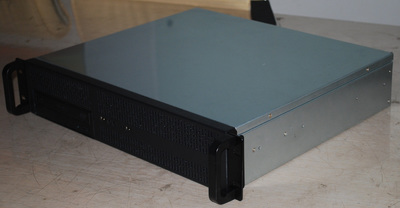
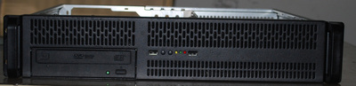
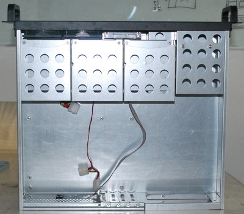

Ri-Vier RV 2004 Rackmount case Review
I ordered a new rackmount case for my third server at home. Previously, I only used Norco cases, but the European distributor of Norco (Ri-vier, Netherlands) decided to switch to using its own cases, the Ri-vier cases.
Since the shipping fees are very expensive from United States to Switzerland, I decided to stick with Ri-vier for now and try their new cases.
I ordered and received the RV-2004 case. This is a 2U case with one 5.25" and 4 3.5". It is a very short case.
The case
Here is a picture of the case:

It looks quite good actually and very like the Norco equivalents.
And here is the front:

You can put a DVD reader on front. There are also two USB ports and several leds. I really don't like the front panel. There a lot of screws that maintain the front panel. Moreover, the part with the buttons and the LEDs is quite hard to put right and seems of really low facture, I haven't been able to make the LEDs work as of now. The buttons have a kind of plastic cap on them, but it is very hard to make them stay on the buttons when you install the front panel. Finally, there are two fans on the front on their own panel. You can remove the fans, but they are so close together, that most silent fans you will buy won't fit side by side.
And an inner view:

The three hard disk top cases are removable. In my case, I only left one of them for the SSD. The rightmost one is very hard to pull in and out. I don't understand why there are only three removable cases. The fourth disk location cannot be moved. As with all other cases, it it not very practical to install a SSD in it. I ended up screwing the SSD on top of one of the removable bays.
Without any media drive and only one SSD, there are plenty of space inside the case to put the cables. Even with all the bays used, there would probably be some space left under the drive bays.
Mouting the motherboard inside the case was really easy, nothing special here.
This case is only mountable with RVR-20 rails, not with the Norco RL rails. These rails are really worse than the Norco rails. There are extensible, being in three parts, but the extension is not as good as Norco's. If you extend the rails, you have to mount the rails close to the rear of the case. Moreover, the clip on rails to unblock them does not seem to work on my rails. Fortunately, that is not a case I intend to upgrade in the future, so I should not use the rails extensively.
Conclusion
Pros
- Super short
- Cheap
- Enough room on the inside
- Looks quite nice
Cons
- Fans too close to each other
- Front panel very cheaply built
- Front panel hard to put correctly in place
- One of the removable hard drive internal bays is very hard to move
- Very poor rails
- No documentation
Conclusion
To finish, I would say that I'm kind of disappointed with this case. It really feels worse than the Norco equivalent. I'd rather have Norco cases again. The only advantage it has over the Norco one is being cheaper. I'm probably gonna go for a Norco case again for my next server.
Comments
Comments powered by Disqus